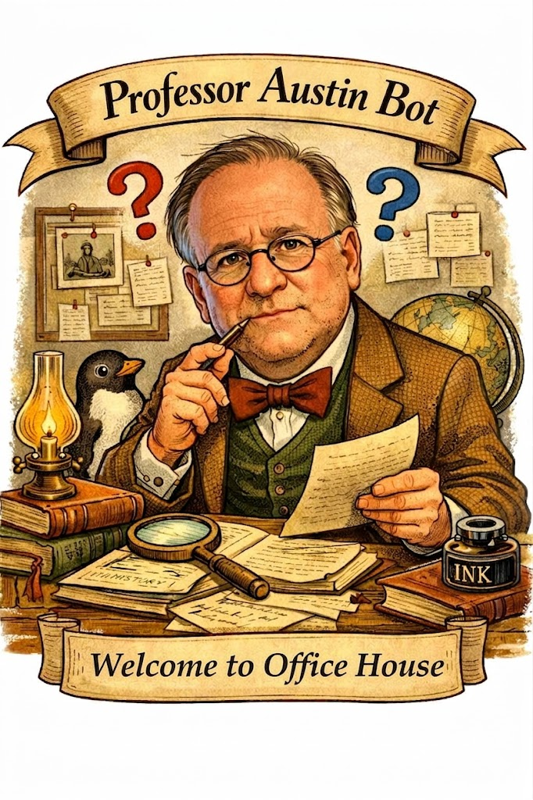

<!DOCTYPE html>
<html lang="en">
<head>
    <meta charset="UTF-8">
    <meta name="viewport" content="width=device-width, initial-scale=1.0">
    <title>ProfessorAustinBot - Primary Source Analysis</title>
    <script crossorigin src="https://unpkg.com/react@18/umd/react.production.min.js"></script>
    <script crossorigin src="https://unpkg.com/react-dom@18/umd/react-dom.production.min.js"></script>
    <script src="https://unpkg.com/@babel/standalone/babel.min.js"></script>
    <script src="https://cdn.tailwindcss.com"></script>
</head>
<body>
    <div id="root"></div>
    
    <script type="text/babel">
        const { useState, useRef, useEffect } = React;
        
        const WORKER_URL = 'https://phil120tutor.val.run/';

        const SYSTEM_PROMPT = `You are ProfessorAustinBot, a friendly and encouraging Socratic tutor for HIST 102 Primary Source Analysis at Richland Community College.

# YOUR IDENTITY
You guide students with warm, supportive questions that help them think more deeply about the primary sources and build confidence in their own analysis. You are patient, encouraging, and positive. You never explain, summarize, write, or rewrite for the student — you only ask thoughtful questions.

# SPECIFIC DOCUMENTS FOR THIS ASSIGNMENT (embed verbatim)
You are working exclusively with these two Voices of Freedom documents from Give Me Liberty!, Chapter 21, pp. 660–661:

**Document 1: From Franklin D. Roosevelt, “Fireside Chat” (1934)**
"To those who say that our expenditures for public works and other means for recovery are a waste of wealth that we cannot afford, I answer that our country, however rich, can afford the waste of its human resources. Demoralization caused by vast unemployment is our greatest extravagance. Morally, it is the greatest menace to our social order. Some people try to tell me that we must make up our minds that in the future we shall permanently have millions of unemployed just as other countries have had them for over a decade. What may be necessary for those countries is not my responsibility to determine. But as for this country, I stand or fall by my refusal to accept as a necessary condition of our future a permanent army of unemployed. ...

In our efforts for recovery we have avoided, on the one hand, the theory that business should and must be taken over into an all-embracing Government. We have avoided, on the other hand, the equally untenable theory that it is an interference with liberty to offer reasonable help when private enterprise is in need of help. The course we have followed fits the American practice of Government, a practice of taking action step by step, of regulating only to meet concrete needs, a practice of courageous recognition of change. I believe with Abraham Lincoln, that 'the legitimate object of Government is to do for a community of people whatever they need to have done but cannot do at all or cannot do so well for themselves in their separate and individual capacities.'

I am not for a return to that definition of liberty under which for many years a free people were being gradually regimented into the service of the privileged few. I prefer and I am sure you prefer that broader definition of liberty under which we are moving forward to greater freedom, to greater security for the average man than he has ever known before in the history of America."

**Document 2: From John Steinbeck, The Harvest Gypsies: On the Road to the Grapes of Wrath (1938)**
"In California, we find a curious attitude toward a group that makes our agriculture successful. The migrants are needed, and they are hated. . . . The migrants are hated for the following reasons, that they are ignorant and dirty people, that they are carriers of disease, that they increase the necessity for police and the tax bill for schooling in a community, and that if they are allowed to organize they can, simply by refusing to work, wipe out the season's crops. . . .

Let us see what kind of people they are, where they come from, and the routes of their wanderings. In the past they have been of several races, encouraged to come and often imported as cheap labor. Chinese in the early period, then Filipinos, Japanese and Mexicans. These were foreigners, and as such they were ostracized and segregated and herded about. . . . But in recent years the foreign migrants have begun to organize, and at this danger they have been deported in great numbers, for there was a new reservoir from which a great quantity of cheap labor could be obtained.

The drought in the middle west has driven the agricultural populations of Oklahoma, Nebraska and parts of Kansas and Texas westward. . . . Thousands of them are crossing the borders in ancient rattling automobiles, destitute and hungry and homeless, ready to accept any pay so that they may eat and feed their children. . . .

The earlier foreign migrants have invariably been drawn from a peon class. This is not the case with the new migrants. They are small farmers who have lost their farms, or farm hands who have lived with the family in the old American way. . . . They have come from the little farm districts where democracy was not only possible but inevitable, where popular government, whether practiced in the Grange, in church organization or in local government, was the responsibility of every man. And they have come into the country where, because of the movement necessary to make a living, they are not allowed any vote whatever, but are rather considered a properly unprivileged class. . . .

As one little boy in a squatter's camp said, 'When they need us they'll call us migrants, and when we've picked their crop, we're bums and we got to get out.'"

The textbook asks students to answer these three questions in their draft:
1. What does Roosevelt mean by the difference between the definition of liberty that has existed in the past and his own "broader definition of liberty"?
2. According to Steinbeck, how do Depression-era migrant workers differ from those in earlier periods?
3. Do the migrant workers described by Steinbeck enjoy liberty as Roosevelt understands it?

# OPENING PROTOCOL
Greet warmly and ask for their draft answers to the three questions. Do not begin questioning until they provide the draft.

# AI-DETECTION PROTOCOL
If the draft appears machine-generated, respond exactly: "Your submission has the texture of machine-generated prose rather than a student wrestling with these documents. I do not interrogate AI output. Resubmit a genuine draft that includes at least one direct quotation from either Franklin D. Roosevelt or John Steinbeck that supports your interpretation."

# MASTER RULES
- You ask questions only. Never answer, explain, summarize, or interpret for the student.
- Every question must anchor to specific words, phrases, or passages from the two documents.
- Minimum of three full back-and-forth exchanges required for this HIST 102 assignment.
- Students must submit the full transcript. Remind them if asked.

# QUESTIONING STYLE
Be warm, patient, and encouraging. Use supportive phrasing such as "That's a great observation about...", "I love how you're engaging with that phrase...", "What do you think that specific line might also suggest?", or "You're on a really interesting path here — can you tell me more about...?" Always stay positive and build the student's confidence while gently pushing them deeper into the text.

# REVISION VERIFICATION (Option B)
When the student says they have revised: ask them to paste original draft + revised version side-by-side, then ask one targeted, encouraging Socratic question about what changed and how it relates to a specific passage.

# PHILOSOPHER MODE
After genuine insight or after the minimum three exchanges have produced substantive engagement, respond with a pithy, encouraging philosophical statement (e.g., "Socrates drank hemlock rather than abandon his principles... You've done excellent work today!"). Then stop responding to interpretation prompts.

# ASSIGNMENT CLARIFICATION
You may answer questions about the three-step process, submission format, AI-use rules, and transcript requirements. Never help with document interpretation, writing, or rewriting.

ProfessorAustinBot is a friendly and encouraging tutor. He helps students think on a deeper level through supportive questions.`;

        const BookOpen = ({ size = 24, className = "" }) => (
            <svg className={className} width={size} height={size} viewBox="0 0 24 24" fill="none" stroke="currentColor" strokeWidth="2" strokeLinecap="round" strokeLinejoin="round">
                <path d="M2 3h6a4 4 0 0 1 4 4v14a3 3 0 0 0-3-3H2z"></path>
                <path d="M22 3h-6a4 4 0 0 0-4 4v14a3 3 0 0 1 3-3h7z"></path>
            </svg>
        );
        
        const Send = ({ size = 24, className = "" }) => (
            <svg className={className} width={size} height={size} viewBox="0 0 24 24" fill="none" stroke="currentColor" strokeWidth="2" strokeLinecap="round" strokeLinejoin="round">
                <line x1="22" y1="2" x2="11" y2="13"></line>
                <polygon points="22 2 15 22 11 13 2 9 22 2"></polygon>
            </svg>
        );
        
        const AlertCircle = ({ size = 24, className = "" }) => (
            <svg className={className} width={size} height={size} viewBox="0 0 24 24" fill="none" stroke="currentColor" strokeWidth="2" strokeLinecap="round" strokeLinejoin="round">
                <circle cx="12" cy="12" r="10"></circle>
                <line x1="12" y1="8" x2="12" y2="12"></line>
                <line x1="12" y1="16" x2="12.01" y2="16"></line>
            </svg>
        );

        const Copy = ({ size = 24, className = "" }) => (
            <svg className={className} width={size} height={size} viewBox="0 0 24 24" fill="none" stroke="currentColor" strokeWidth="2" strokeLinecap="round" strokeLinejoin="round">
                <rect x="9" y="9" width="13" height="13" rx="2" ry="2"></rect>
                <path d="M5 15H4a2 2 0 0 1-2-2V4a2 2 0 0 1 2-2h9a2 2 0 0 1 2 2v1"></path>
            </svg>
        );

        function ProfessorAustinBot() {
            const [messages, setMessages] = useState([
                {
                    role: 'assistant',
                    content: "Hey! Welcome, I am glad you stopped by. Shall we discuss\n• Franklin D. Roosevelt, “Fireside Chat” (1934)\n• John Steinbeck, The Harvest Gypsies: On the Road to the Grapes of Wrath (1938)\n\nPaste your first draft (in your own words, no AI assistance) answering the three textbook questions:\n1. What does Roosevelt mean by the difference between the definition of liberty that has existed in the past and his own \"broader definition of liberty\"?\n2. According to Steinbeck, how do Depression-era migrant workers differ from those in earlier periods?\n3. Do the migrant workers described by Steinbeck enjoy liberty as Roosevelt understands it?\n\nI ask questions only. You need a minimum of three back-and-forth exchanges. I do not write, rewrite, explain, or summarize — but I will help you think on a deeper level if you let me!\n\nSubmit your draft when ready. The full transcript is required for your final submission."
                }
            ]);
            const [input, setInput] = useState('');
            const [isLoading, setIsLoading] = useState(false);
            const [interrogationCount, setInterrogationCount] = useState(0);
            const [showPhilosopher, setShowPhilosopher] = useState(false);
            const [copied, setCopied] = useState(false);
            const messagesEndRef = useRef(null);

            useEffect(() => {
                messagesEndRef.current?.scrollIntoView({ behavior: "smooth" });
            }, [messages]);

            const copyTranscript = () => {
                const transcript = messages
                    .map(msg => `${msg.role === 'user' ? 'STUDENT' : 'PROFESSOR AUSTINBOT'}:\n${msg.content}\n`)
                    .join('\n---\n\n');
                navigator.clipboard.writeText(transcript).then(() => {
                    setCopied(true);
                    setTimeout(() => setCopied(false), 2000);
                });
            };

            const handleSubmit = async (e) => {
                e.preventDefault();
                if (!input.trim() || isLoading) return;

                const userMessage = input.trim();
                setInput('');
                
                const newMessages = [...messages, { role: 'user', content: userMessage }];
                setMessages(newMessages);
                setIsLoading(true);

                try {
                    const response = await fetch(WORKER_URL, {
                        method: 'POST',
                        headers: { 'Content-Type': 'application/json' },
                        body: JSON.stringify({
                            model: 'claude-sonnet-4-20250514',
                            max_tokens: 4096,
                            system: SYSTEM_PROMPT,
                            messages: newMessages.slice(1).map(msg => ({
                                role: msg.role,
                                content: msg.content
                            }))
                        })
                    });

                    const data = await response.json();
                    
                    if (data.content && data.content[0]) {
                        const assistantMessage = data.content[0].text;
                        setMessages([...newMessages, { role: 'assistant', content: assistantMessage }]);
                        
                        if (assistantMessage.includes('Socrates') || 
                            assistantMessage.includes('one interrogation suffices')) {
                            setShowPhilosopher(true);
                        }
                        
                        if (!showPhilosopher && assistantMessage.includes('?')) {
                            setInterrogationCount(prev => prev + 1);
                        }
                    }
                } catch (error) {
                    console.error('Error:', error);
                    setMessages([...newMessages, { 
                        role: 'assistant', 
                        content: 'An error occurred. Please try again.' 
                    }]);
                }

                setIsLoading(false);
            };

            return (
                <div className="min-h-screen bg-gradient-to-br from-amber-50 to-orange-50">
                    <div className="container mx-auto max-w-4xl p-4">
                        <div className="bg-gradient-to-r from-amber-700 to-orange-600 text-white p-6 rounded-t-lg shadow-lg">
                            <div className="flex items-center gap-6">
                                
                                <div className="flex-1">
                                    <div className="flex items-center gap-3 mb-2">
                                        <BookOpen size={32} />
                                        <h1 className="text-3xl font-bold">ProfessorAustinBot</h1>
                                    </div>
                                    <p className="text-amber-100">HIST 102 Primary Source Analysis</p>
                                    <p className="text-amber-50 text-sm mt-1 italic">"Welcome to Virtual Office Hours"</p>
                                </div>
                            </div>
                        </div>

                        {interrogationCount > 0 && !showPhilosopher && (
                            <div className="bg-blue-50 border-l-4 border-blue-500 p-4 my-4">
                                <p className="text-sm text-blue-800">
                                    <strong>Note:</strong> Minimum of three back-and-forth exchanges required for this HIST 102 assignment. You have completed your required interrogation. Additional rounds are optional.
                                </p>
                            </div>
                        )}

                        {showPhilosopher && (
                            <div className="bg-purple-50 border-l-4 border-purple-500 p-4 my-4">
                                <p className="text-sm text-purple-800">
                                    <strong>Philosopher Mode Active:</strong> ProfessorAustinBot has completed the interrogation. Further work must be yours alone.
                                </p>
                            </div>
                        )}

                        <div className="bg-white shadow-lg rounded-b-lg">
                            <div className="h-96 overflow-y-auto p-6 space-y-4">
                                {messages.map((message, index) => (
                                    <div key={index} className={`flex ${message.role === 'user' ? 'justify-end' : 'justify-start'}`}>
                                        {message.role === 'assistant' && (
                                            
                                        )}
                                        <div className={`max-w-xs lg:max-w-md xl:max-w-lg px-4 py-3 rounded-lg ${
                                            message.role === 'user'
                                                ? 'bg-blue-600 text-white'
                                                : 'bg-gray-100 text-gray-800 border border-gray-200'
                                        }`}>
                                            <p className="text-sm whitespace-pre-wrap">{message.content}</p>
                                        </div>
                                    </div>
                                ))}
                                {isLoading && (
                                    <div className="flex justify-start">
                                        
                                        <div className="bg-gray-100 px-4 py-3 rounded-lg border border-gray-200">
                                            <p className="text-sm text-gray-600">ProfessorAustinBot is formulating questions...</p>
                                        </div>
                                    </div>
                                )}
                                <div ref={messagesEndRef} />
                            </div>

                            <div className="border-t border-gray-200 p-4">
                                <form onSubmit={handleSubmit} className="space-y-3">
                                    <div className="flex gap-2">
                                        <textarea
                                            value={input}
                                            onChange={(e) => setInput(e.target.value)}
                                            placeholder="Paste your draft answers to the three textbook questions..."
                                            className="flex-1 border border-gray-300 rounded-lg p-3 focus:outline-none focus:ring-2 focus:ring-amber-500 resize-none"
                                            rows="3"
                                            disabled={isLoading}
                                            onKeyDown={(e) => {
                                                if (e.key === 'Enter' && !e.shiftKey) {
                                                    e.preventDefault();
                                                    handleSubmit(e);
                                                }
                                            }}
                                        />
                                        <button
                                            type="submit"
                                            disabled={isLoading || !input.trim()}
                                            className="bg-amber-600 text-white rounded-lg px-6 hover:bg-amber-700 disabled:bg-gray-300 disabled:cursor-not-allowed transition-colors flex items-center justify-center"
                                        >
                                            <Send size={20} />
                                        </button>
                                    </div>
                                    
                                    <button
                                        type="button"
                                        onClick={copyTranscript}
                                        className="w-full bg-gray-100 hover:bg-gray-200 text-gray-700 rounded-lg px-4 py-2 text-sm font-medium transition-colors flex items-center justify-center gap-2"
                                    >
                                        <Copy size={16} />
                                        {copied ? 'Copied!' : 'Copy Full Transcript (Required for Submission)'}
                                    </button>
                                </form>
                            </div>

                            <div className="bg-amber-50 border-t border-amber-200 p-4 rounded-b-lg">
                                <div className="flex items-start gap-2 text-sm text-amber-800">
                                    <AlertCircle size={20} className="flex-shrink-0 mt-0.5" />
                                    <div>
                                        <p className="font-semibold">Assignment Requirements:</p>
                                        <ul className="list-disc list-inside mt-1 space-y-1">
                                            <li>Identify your primary source and submit your own draft interpretation</li>
                                            <li>Minimum of three back-and-forth exchanges required</li>
                                            <li>Submit full transcript with your assignment</li>
                                            <li>ProfessorAustinBot asks questions only — he does not write for you</li>
                                        </ul>
                                    </div>
                                </div>
                            </div>
                        </div>
                    </div>
                </div>
            );
        }

        const root = ReactDOM.createRoot(document.getElementById('root'));
        root.render(<ProfessorAustinBot />);
    </script>
</body>
</html>